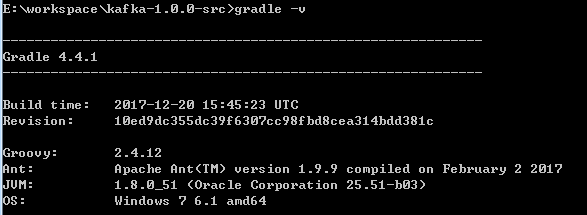
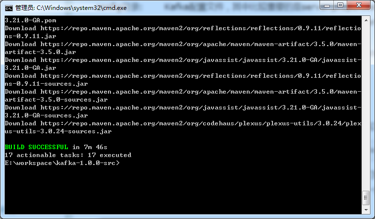
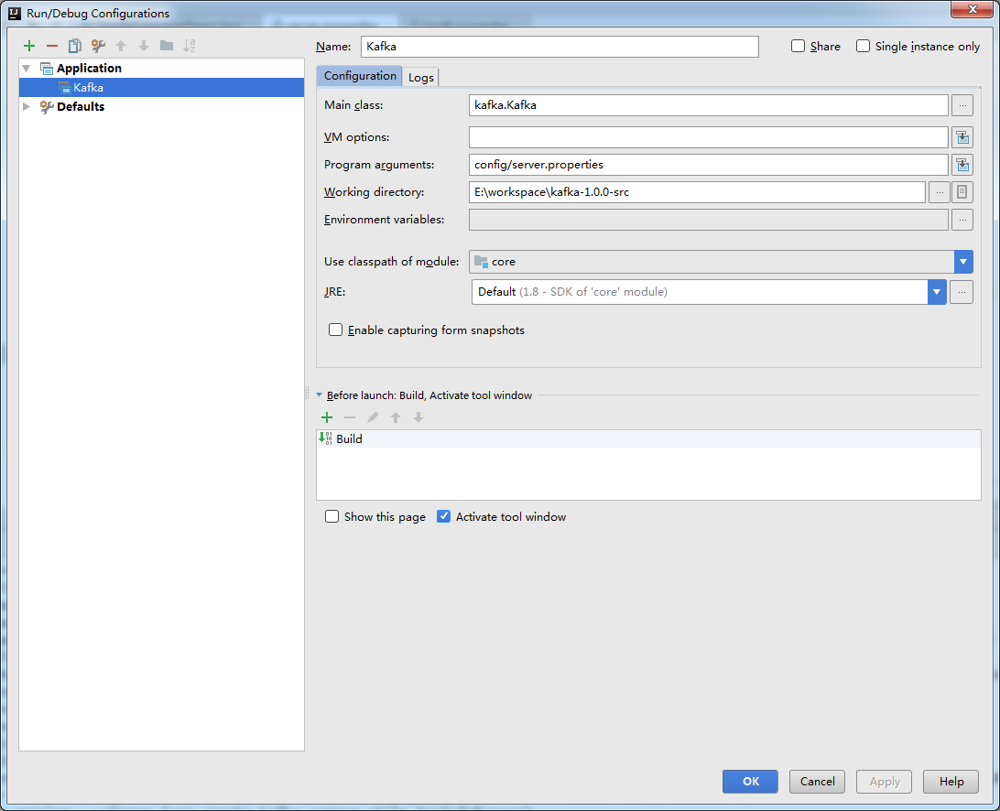

Kafka是一种分布式的，基于发布/订阅的消息系统。主要设计目标如下：
- 以时间复杂度为O(1)的方式提供消息持久化能力，即使对TB级以上数据也能保证常数时间复杂度的访问性能
- 高吞吐率。即使在非常廉价的商用机器上也能做到单机支持每秒100K条以上消息的传输
- 支持Kafka Server间的消息分区，及分布式消费，同时保证每个Partition内的消息顺序传输
- 同时支持离线数据处理和实时数据处理
- Scale out：支持在线水平扩展
Gradle安装配置
Kafka使用Gradle进行编译和构建，因此首先需要安装Gradle。从官网下载最新的Gradle，解压至一个目录，然后创建一个GRADLE_HOME环境变量指向这个目录，再将%GRADLE_HOME%\bin加到PATH环境变量中，Gradle就安装配置好了。

Kafka源码导入
在 Kafka 目录中执行 gradle idea 生成 IDEA 工程文件。如果是第一次运行，可能会花费一些时间去下载必要的jar包，在等待了一段时间之后，终于看到了BUILD SUCCESSFUL的字样表示项目工程文件生成成功。

之后就可以使用 IDEA 打开工程了。
配置server.properties
kafka broker启动时需要加载server.properties文件。该文件默认位置是在config目录下，因此需要设置运行kafka.Kafka时的Program arguments为config/server.properties，以保证Kafka能够找到该配置文件。
另外，由于kafka broker会将一些元数据信息保存在zookeeper中，因此在启动kafka broker之前必须要先有一个启动着的zookeeper实例或集群。我们还需要在server.properties文件更新zookeeper连接信息:
############################# Zookeeper ############################# |
可以使用zookeeper的chroot方式，为Kafka单独划分一个命名空间，避免直接在zookeeper的根目录创建Kafka的节点。
启动Kafka
在 IDEA 中点击 Edit Configuration，按照如下配置

log4j.properties文件路径设置
启动kafka server很奇怪，可能会抱一个log4j.properties文件找不到的错误。
解决方法是把log4j.properties放置到src/main/scala路径下。